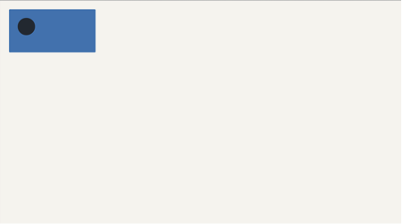
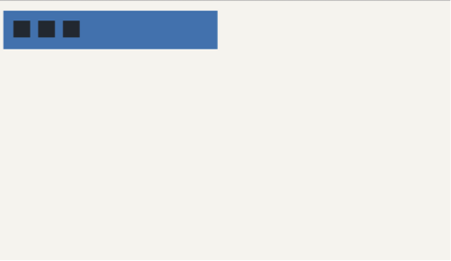
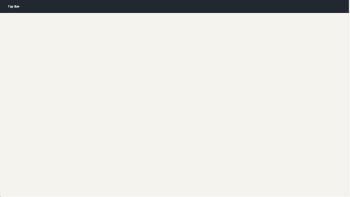
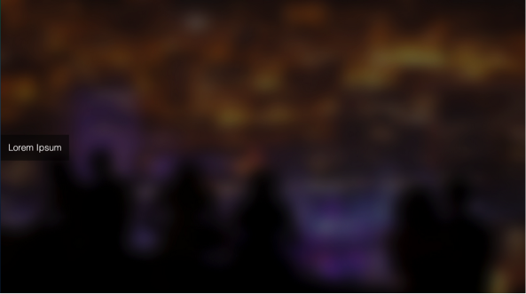
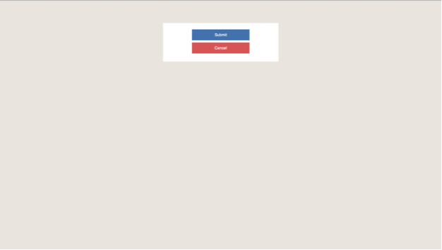
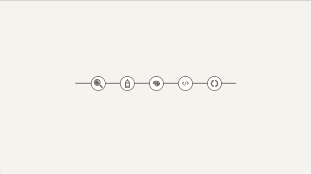
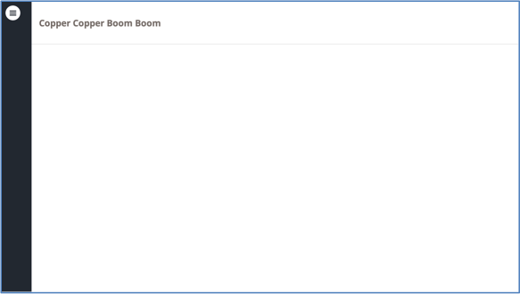

You must NOT make any changes to HTML document in these questions. All of your changes should only be in style.css (you know the drill!).
-
Question 1
In question1.html, you will see a circle and a rectangle. Your job is to make the circle go inside a rectangle to look something like this:
Hint: Ideally, your changes to style.css should involve only two or three lines of code. Use position CSS property to achieve this effect.
-
Question 2
In question2.html, you will see three squares aligned vertically inside a rectangle. Your job is to align these three squares align horizontally.
Hint: Ideally, your changes to style.css should involve only one or two lines of code. Use float or display CSS property to achieve this effect.
-
Question 3
In question3.html, you will see a top bar, but it goes away when you scroll. Your job is to make the top bar stick to the top even when you scroll.
Hint: Ideally, your changes to style.css should involve only two lines of code.
-
Question 4
In question4.html, you will see a box below a background image. Your job is to vertically center a box on top of a background image.
Hint: To vertically center an element, add: position: absolute; top: 50%; transform: translateY(-50%);
-
Question 5
In question5.html, you will see a partially styled HTML file. Your job is to make the HTML look like this:
You are not allowed to use any additional padding or margin property. You should use absolute positioning with top and left properties to position your elements for this question. The container of the submit and cancel buttons should be relatively positioned.
-
Question 6
In question6.html, you will see a spine and 5 icons. Your job is to create a timeline-style view like this:
Hint: You can take multiple approaches to this problem. You will need to use display attributes, but you can do either margin with a negative value or a combination of position absolute/relative with perhaps z-index to create the overlap.
-
Question 7
In question7.html, you will see an unstyled HTML file. Your job is to make the HTML look like this:
Basically, you are creating a sidebar instead of a top bar described in lecture. The sidebar should remain in the position when the user scrolls the web page. The sidebar's height should also be equal to the window's height.
Hint: If some of the content area is covered by the sidebar, try using margin-left property on the content area.
Your lab checkoff word will be the same as your attendance word! No need to submit anything :)